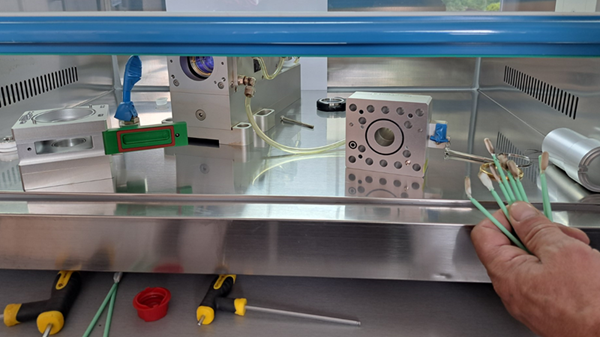

Usluge / Servisne intervencije
Stroj stoji? Dolazimo.
Zastoj zbog kvara znači izgubljen novac, pa je brza dijagnostika ključna. Serviseri sa specijaliziranim alatom i dijagnostičkom opremom pronalaze uzrok mehaničkih, električnih i softverskih problema i otklanjaju ga.
- Odgovor na prijavu
- 24 h
- Otklanjanje kvara
- 48–72 h

Od prijave do popravka
Kako ide intervencija
Prijava
Pošaljite opis kvara na prijavakvara@chitechlaser.com: model stroja, poruku greške i fotografiju ako je imate.
Odgovor u 24 h
Javljamo se online u roku 24 sata i pokušavamo kvar riješiti na daljinu.
Dijagnostika
Ako treba, serviser dolazi na teren, pregledava komponente i utvrđuje uzrok.
Popravak
Kvar otklanjamo u roku od 48 do 72 sata.
Savjetovanje
Savjeti o upravljanju strojem i podešavanju parametara, da do kvara ne dođe ponovno.
I za druge strojeve
Interveniramo i na strojevima kupljenim kod drugih dobavljača.
Godišnji servis
Redovnim servisom kvar se često spriječi prije nego što zaustavi proizvodnju.
Redovni servisiKvar na stroju
Odgovaramo u roku 24 sata
Pišite na prijavakvara@chitechlaser.com ili nazovite +385 91 111 4600. Za Srbiju: +381 65 360 3505.